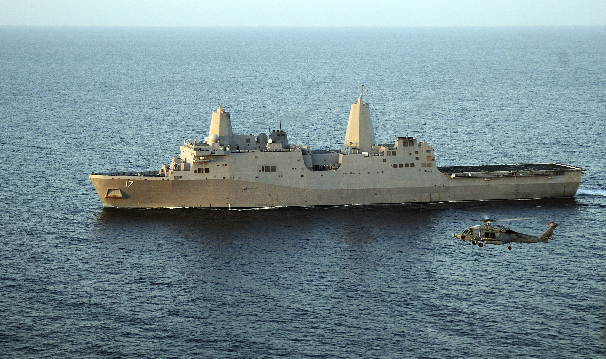
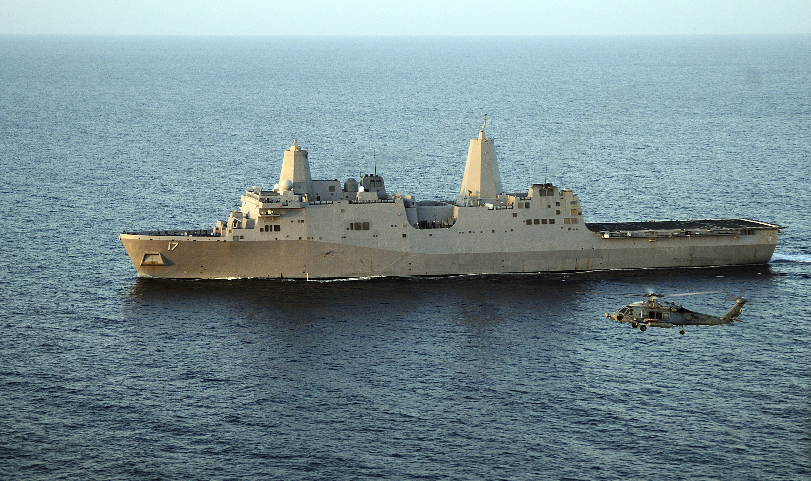

Piracy in Somalia
Although by many estimates piracy around Somalia is rapidly declining, it is still a major concern for vessels traveling through the Indian Ocean and the Gulf of Aden. In addition, with more than 10% of the world’s seaborne oil being transported through the gulf - en route to the Suez Canal or to regional refineries - the threat of piracy remains particularly worrisome to the oil shipping business.
Piracy attacks grew dramatically from 2008 to 2011, going from 24 attacks in 2008 to a staggering 176 attacks in 2011. Out of these 176 attacks, 25 were successful, which meant that the pirates succeeded in taking control of the ship and the crew was taken hostage. However, the number of attacks has since rapidly declined, with just 6 attacks in 2013, none of which were successful. Reasons for this decline include an increase in the presence of international naval forces in the region, adoption of “best management practices” by the ships traveling these waters (such as taking evasive action and hardening the ship’s hulls) and hiring private security guards on board the ships.
Links:
Piracy Finances -
The Business of Piracy | The EconomistPirate Trails: Tracking the Illicit Financial Flows from Pirate Activities off the Horn of Africa | World Bank
An Economic Analysis of the Somali Pirate Business Model | Wired
Private Navies and Armed Security:
Private patrol boats to tackle Somali pirates | BBCTyphon fights back against pirates | Telegraph
Pirate-Fighters, Inc.: How Mercenaries Became Ships’ Best Defense | Wired
This Tech Entrepreneur Is About to Launch the Blackwater of the High Seas | Wired
Piracy as a Game?
Cutthroat Capitalism: The Game | WiredOther:
Seychelles cells: The Somali pirates 'jailed in paradise'| BBCCMF Commanders and Force Generation Conference ‘a success’
Countering Piracy off the Coast of Somalia - EU
Somali Man Sentenced to More Than 33 Years in Hijacking of Ships | WSJ
Video:
Somali Pirates Aboard Yasa Neslihan | WiredPirates Kill U.S. Hostages, So U.S. Forces Kill Pirates | Wired
 



{kind=link}